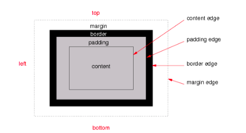

CSS
Boxmodel
Opdracht 4
Leg uit wat de volgende termen betekenen: content, padding, margin en border.

afbeelding van het boxmodel
boxmodel
-
content, is de inhoud van het element
-
padding, de ruimte tussen content en border
-
border, de rand van het boxmodel(element)
-
margin de ruimte buiten de rand